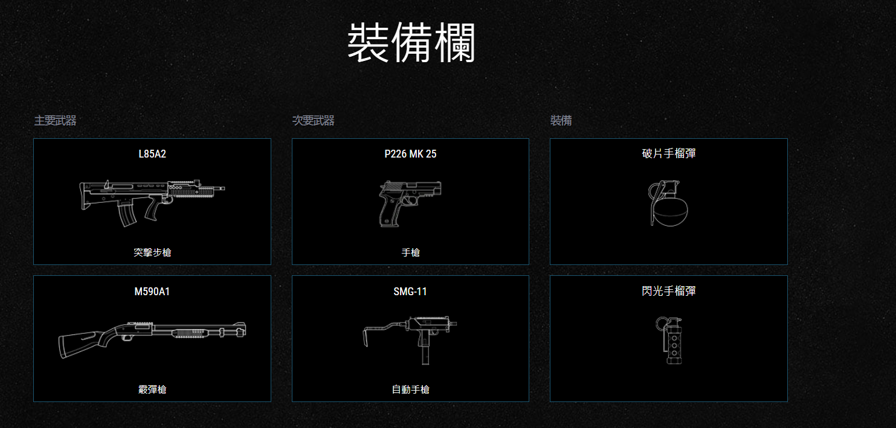

-
特勤幹員姓名
西莫斯•考登
暱稱
SLEDGE
組織
SAS
出生日期: 4月2日(35歲)
出生地點: 蘇格蘭,約翰奧格羅茨
身高: 192公分
體重: 95公斤


裝甲:＊＊
速度:＊＊
難度:＊
因為曾為國家級運動選手，有著驚人的耐力、暴發力和臂力而後因其超強臂力成為了SAS的"破門手(爆破棰)"。
推薦使用槍枝
L85A2
槍枝穩定，瞄準不容易浮動，比起散彈槍更實用
戰術突破錘:
能夠破壞未加強的表面，他擅長創造新的槍線和入口點，對防守方加以干擾。還可以一擊摧毀鐵絲網和Castle的防護板。這個技能最大賣點是可以用來錘殺防守方幹員(另類的審問)。

Sledge算是一個蠻好上手的角色,槍使用起來不會亂飄的很嚴重,技能使用起來也方便,可以打造更多進出空間和達到戰術目的。
-
特勤幹員姓名
麥可•貝克
暱稱
THATCHER
組織
SAS
出生日期: 6用22日(56歲)
出生地點: 英格蘭，百德弗
身高: 180公分
體重: 72公斤

裝甲:＊＊
速度:＊＊
難度:＊
因為3項實戰經歷皆有與平民接觸並使其免受戰火潑及之經驗所以被認為非常適合擔任SP任務另外也精於CQC和反電子作戰。
推薦使用槍枝
L85A2
同理sledge，跟AR33比有更穩定及多彈藥量優勢

EG MKO電磁脈衝手榴彈:
可以破壞範圍內某些敵方電子設備並使敵方瞄準鏡暫時癱瘓。

Thatcher的脈衝手榴彈在進攻時具有強大的輔助效益，防守方大部分道具都能靠它來癱瘓10秒，對於加裝了電網的強化牆，也可利用脈衝手榴彈使其失效再搭配燒牆角來爆破。攻擊方裡面最偉大的工具人非他莫屬，真的是非他莫屬，不管有沒有燒牆，EMP通常都會在作戰中很有用，所有的電子設備都會被這東西毀掉，即便是妖怪、邪眼也都會被EMP停擺， 因此當你不知道選甚麼角，選這隻議定對團隊有幫助。
-
特勤幹員姓名
伊莉莎•寇恩
暱稱
ASH
組織
FBI SWAT
出生日期: 12用24日(33歲)
出生地點: 以色列，約路撒冷
身高: 170公分
體重: 63公斤


裝甲:＊
速度:＊＊＊
難度:＊＊
拆彈專家同時也是名精湛的機械維修人員。
推薦使用槍枝
G36C
兩者差異不大，但R4C缺少高倍鏡，反應要更快

M120 輕型步槍用破口彈:
可從遠處發射並用爆炸破壞可破壞的物體，若爆破彈直接擊中防守方幹員會固定造成50點傷害且不會有爆炸效果。

Ash的優勢在於可以進行遠距離的破門行動，及炸毀未通電的道具她有個綽號【五速無頭怪】，ASH是高手愛角有幾個原因，1.兩把主武器的槍都很優秀，2.三速角體質使她機動力與速度都非常高，3.爆破彈能拿來清除路上的阻礙使她無人能擋，4.她很難被爆頭 。因此如果有高手要玩ASH，誠心建議新手們還是把ASH乖乖讓給老司機帶你們飆車RUSH。
跑太快了根本沒畫面
-
特勤幹員姓名
喬丹•崔斯
暱稱
thermite
組織
FBI SWAT
出生日期: 3月14日(36歲)
出生地點: 德州,普萊諾
身高: 178公分
體重: 80公斤

裝甲:＊＊
速度:＊＊
難度:＊
擅於化學與理工項目。
推薦使用槍枝
556XI
高穩定，也是唯一主力步槍

煉獄火 BC-3 放熱炸藥:
鋁熱炸藥可用以破壞加固的牆面與天花板。炸藥從啟動到炸毀牆面需約5秒的時間，這段過程有可能會因通電加固牆面而被破壞甚至在未加固的牆上使用鋁熱炸藥，防守方能直接從牆的另一側對其開槍而破壞。

一位可以炸掉強化牆的幹員，在面對強化的天花板或是包的像堡壘的房間時，可以放熱炸彈來進行爆破，因此 除非隊友都沒破牆手段或是危急情況，不建議浪費放熱炸藥於普通牆壁。通常打rank時，會選出Thatcher來進行搭配，此時跟好隊友來燒牆，並配合好emp燒掉重要的點位(此時要小心聽電)，在燒牆前一定要保好自己的性命，否則會很難進攻。
-
特勤幹員姓名
艾曼紐•碧尚
暱稱
TWITCH
組織
GIGN
出生日期: 10月12日(28歲)
出生地點: 法國,南錫
身高: 168公分
體重: 58公斤


裝甲:＊＊
速度:＊＊
難度:＊＊
數理天才，有著超乎常人的邏輯和分析能力同時是名自學出師的機器人專家為機械的運作原理和結構組成所著迷，屬於實作型的機工技師。
推薦使用槍枝
417
雖然是點發式，但有著高倍鏡的加持和比F2更穩定的性質

RSD 第1型無人攻擊機:
可以用來破壞敵方電子物品或攻擊人員，每台一開始具有三次電擊的機會，電擊可以無限次衝能，電防守方的幹員時只能造成1點傷害。Twitch的無人攻擊機在操作時幾乎不會產生噪音，因此比普通無人機有較高的隱匿性，但缺點是無法跳躍。

電車可以很好的剋制對方的道具，不適合用來開局探點。在準備階段要先保好自己的車，開局後再找機會偷偷潛入點內攻擊敵方闇鏡，ads，電箱等關鍵道具。電車還有一個特別的玩法，他可以打自己隊友的車，因此部分隊友選到twitch後會在準備階段開始跟你玩鬼抓人的遊戲，嘗試把隊友的車打掉，此時要善用電車不能跳的特性來躲避。
-
特勤幹員姓名
吉爾•圖雷
暱稱
MONTAGNE
組織
GIGN
出生日期: 10月11日(48歲)
出生地點: 法國,波爾多
身高: 190公分
體重: 90公斤

裝甲:＊＊＊
速度:＊
難度:＊＊
精於中近距離與CQC作戰另外對城市作戰也有相當的心得。
推薦使用槍枝
P9
大盾因持盾關係只有手槍能選，P9子彈多，瞄準浮動低，連射性高

堅石:
一伸縮護盾，可提供全面性的正面防禦並吸收約80%的爆炸傷害，但開啟時自身無法使用武器。

大盾沒有什麽特別的進攻思路，後面跟個能支援你的隊友就行了。作為一個正面全盾無敵的幹員，你的任務就是獲取敵方信息，然後標出來，給予隊友情報。 在推進的時候，不僅僅要小心陷阱及c4，也要注意後面的隊友，可能一不小心，你就成為隊友的槍下魂。
左邊的影片
右邊的影片
-
特勤幹員姓名
舒瑞•凱西巴耶夫
暱稱
FUZE
組織
Альфа
出生日期: 10月12日(34歲)
出生地點: 烏茲別克,撒馬爾罕
身高: 180公分
體重: 80公斤


裝甲:＊＊＊
速度:＊
難度:＊
專業的工匠和工藝專家。
推薦使用槍枝
6P41
屬於一種機槍，用高火力來補足瞄準

AMP-6『俄羅斯娃娃』:
可固定在牆面、地板或Castle的防護板上後朝另一側射出五顆小型手榴彈。

由於有不少玩家在人質模式中因情報不足等因素(或者是惡意TK隊友)在錯誤地點安裝技能，進而誤傷友軍乃至誤殺人質，所以Fuze常被戲稱為「人質救援專家」。這隻角色是一個很極端的存在，用得好的人會清掉點內的各種道具甚至是敵方幹員性命，但用不好的人反而會限制隊友的走位，帶走隊友的生面，是一隻需要與隊友溝通的角色。通常安裝技能的位置都是在點的外側以及樓上的木地板來轟炸。
左邊的影片
右邊的影片
-
特勤幹員姓名
亞歷山大•謝納維耶夫
暱稱
TACHANKA
組織
Альфа
出生日期: 7月2日(30歲)
出生地點: 俄羅斯,海參崴
身高: 178公分
體重: 79公斤

裝甲:＊＊
速度:＊＊
難度:＊
擁有畫家的觀察力和沉著心,使他成為優秀的狙擊手與觀測手。
推薦使用槍枝
OTS-03
HDS 折疊式瞄準鏡:
為安裝於狙擊步槍上方的熱成像瞄準鏡，可穿過煙霧看見敵人，所有敵人會散發出黃色光芒。

GLAZ的槍械和技能優勢讓他是壓製防守方有力的武器，典型的地圖就是飛機場，他擁有整個遊戲少數能擊穿飛機玻璃的槍械，使他站在飛機外就能壓製裡面的防守方。利用自身攜帶的煙霧彈來封煙下包然後架槍掩護隊友下包是這隻角色一個常見的打法，利用自身可以穿透煙霧瞄準來尋找對方進行擊殺並成功掩護隊友。
-
特勤幹員姓名
艾力亞斯•柯茨
暱稱
BLITZ
組織
GSG 9
出生日期: 4月2日(37歲)
出生地點: 德國,不萊梅
身高: 175公分
體重: 75公斤


裝甲:＊＊
速度:＊＊
難度:＊＊＊
高學歷知識分子,曾是名田徑選手。
推薦使用槍枝
P12

G52 戰術護盾:
為一附加閃光裝置的防彈盾，可用來眩盲敵人，在Mute的訊號干擾範圍內無法使用，每次使用之間有7秒的冷卻時間。與其他盾牌幹員不同的是，Blitz手持盾牌時可以將盾牌擋在前方進行衝鋒。

閃盾需要對距離有很好的把握，離得太遠閃不到，太近會被刀。閃盾要盡可能避開長走廊，也要小心拐角。同時在衝刺時對面會打你肩膀跟腿，這是一隻不簡單的角色。曾經問過一位很愛玩閃盾的朋友，如何能玩閃盾，他給了八字諍言「到死之前 ，永不停下」。
左邊的影片
右邊的影片
-
特勤幹員姓名
莫妮卡•魏斯
暱稱
IQ
組織
GSG 9
出生日期: 8月1日(38歲)
出生地點: 德國,萊比錫
身高: 175公分
體重: 70公斤

裝甲:＊
速度:＊＊＊
難度:＊＊＊
電子工程技師。
推薦使用槍枝
552 COMMANDO
槍枝中規中矩，AUG體積較大有擋住視角的可能

RED MK III『幽靈』:
可無視障礙物偵測距離20公尺內的敵方電子裝置。但啟動時僅可用手槍。IQ亦可偵測某些正在使用的攜帶型電子設備，如Pulse和Vigil的裝備，甚至是正在使用監視器的防守方幹員手機。

IQ 在反制敵方電子儀器、無人機、監視器能力相當強大，掃描儀幾乎能將所有防守方的電子設備掃描出來，相當適合讓新手了解防守方的防禦工事如何建立，以及為何如此建立。這隻角色是一隻很好刷分數的角色，只要常常開著掃描儀你的分數就會不斷的往上提升，她可以探查到敵人的所有陷阱(除了夾子)，雖然她並沒有強勢的進攻技能，但卻能反制許多強大的防守道具(ECHO的車、LESION的蠱……)，當你被他們煩到起笑時，不仿試試拿出IQ來處理